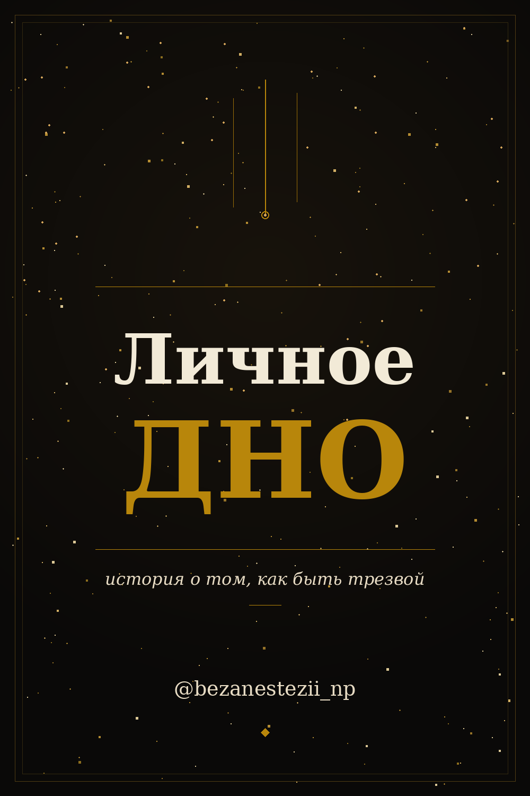

«Личное дно». Книга о женском высокофункциональном алкоголизме.
От первого лица. Без прикрас.
Каждая четвёртая женщина после 35 использует алкоголь как способ справляться с тревогой.
Большинство из них никогда не назовут это алкоголизмом.
Полная книга — 490 ₽ внутри бота
Бот не публикует ничего. Оплата анонимная через ЮКасса. Никто не узнает.
Отрывок из книги — пролог
Эту ночь я помню фрагментами. Так всегда бывает с теми ночами, которые лучше бы не помнить вообще, но именно они почему-то остаются навсегда.
Лестница. Чужой подъезд. Я.
Падение было не красивым, не киношным. Не так, как героиня медленно оседает по стене с трагическим выражением лица. Это было то самое пьяное падение: неловкое, громкое, с полным отсутствием контроля над собственным телом.
Мои дети это видели.
Они не закричали. Они подхватили меня под руки, молча, слаженно, как будто уже знали, что делать. Как будто репетировали заранее.
Замечательная картина, правда? Успешная женщина. Хорошая мать. Специалист, которого ценят на работе. Человек, у которого всё под контролем...
...Это не слабость характера. Это выученная беспомощность. Это отсутствие инструментов, которые никто не давал — потому что зачем, вот же готовый, в магазине за углом, работает немедленно.
Читать отрывок бесплатно в Telegram →Бот не публикует ничего. Никто не узнает.
Для кого эта книга
Что внутри
4 практических приложения
Об авторе
PDF сразу после оплаты. Безопасная оплата через ЮКасса.
490 ₽
Читать отрывок бесплатно в Telegram →Полная книга — 490 ₽ внутри бота
Бот не публикует ничего. Оплата анонимная. Никто не узнает.